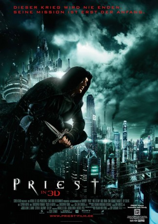

 
 IMDB-Wertung: 5.7 / 10
IMDB-Wertung: 5.7 / 10  Tomatometer: 15
Tomatometer: 15  Metascore:
Metascore: 
Seit Jahrhunderten tobt eine erbitterte Schlacht zwischen Menschen und Vampiren. In den letzten Refugien der Menschheit hat die Kirche die Macht an sich gerissen und herrscht mit tyrannischer Härte über ihre verängstigte Herde. Als seine Nichte von einer Vampir-Gang entführt wird, sagt sich ein Priester von seiner Institution los und begibt sich auf eigene Faust in die postapokalyptische Prärie, um die Kleine zu retten. Behilflich ist ihm dabei der in das Mädchen verliebte Sheriff Hicks.
Jahr: 2011
Dauer: 87 Minuten
FSK: 16
Land: USA Studio: Screen GemsTonspuren: DTS - ,
Untertitel: Deutsch,
Auflösung: 1080p (1920x800) Größe: 3665 MB
Genre: Action, Thriller, Horror, Sci-Fi, Abenteuer, Fantasy
Regisseur: Scott Stewart
Drehbuch: Cory Goodman, Min-Woo Hyung
Soundtrack: Andrew Spence, Christopher Young
Darsteller:
 Paul Bettany als Priest
Paul Bettany als Priest Karl Urban als Black Hat
Karl Urban als Black Hat Cam Gigandet als Hicks
Cam Gigandet als Hicks Maggie Q als Priestess
Maggie Q als Priestess Lily Collins als Lucy Pace
Lily Collins als Lucy Pace Christopher Plummer als Monsignor Orelas
Christopher Plummer als Monsignor Orelas Alan Dale als Monsignor Chamberlain
Alan Dale als Monsignor Chamberlain Josh Wingate als Familiar
Josh Wingate als Familiar Tanoai Reed als Brave Priest
Tanoai Reed als Brave Priest Arnold Chon als Strong Priest
Arnold Chon als Strong Priest Henry Kingi Jr. als Bold Priest
Henry Kingi Jr. als Bold Priest Anthony Azizi als Farsi Speaking Vendor
Anthony Azizi als Farsi Speaking VendorDatei: X:\2011(N-Z)\Priest (2011, FSK16, 1920x800) 3D.mkv seit 24.04.2019
Festplatte: HD 2011(G-Z)
 Es gibt insgesamt 132 Filme in der Gruppe '2011(N-Z)'
Es gibt insgesamt 132 Filme in der Gruppe '2011(N-Z)'